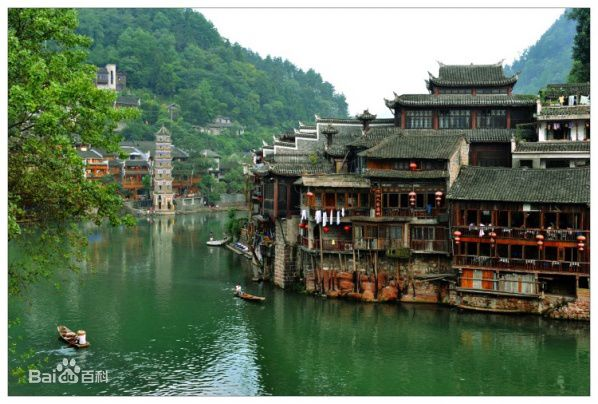

凤凰-沱江吊脚楼
凤凰景点介绍
沱江河是凤凰的母亲河，她依着城墙缓缓流淌，世世代代哺育着古城儿女。坐上乌蓬船，听着艄公的号子，看着两岸已有百年历史的土家吊脚楼，别有一番韵味。顺水而下，穿过虹桥一幅江南水乡的画卷便展现于眼前：万寿宫、万名塔、夺翠楼……一种远离尘世的感觉悠然而生。沱江的南岸是古城墙，用紫红沙石砌成，典雅不失雄伟。城墙有东、北两座城楼，久经沧桑，依然壮观。沱江河水清澈，城墙边的河道很浅，水流悠游缓和，可以看到柔波里招摇的水草，可以撑一支长篙漫溯。沿沱江边而建的吊脚楼群在东门虹桥和北门跳岩附近,细脚伶仃的立在沱江里，象一幅永不回来的风景。
吊脚楼的规模
回龙阁吊脚楼群座落在古城东南的回龙阁，前临古官道，后悬于沱江之上，是凤凰古城具有浓郁苗族建筑特色的古建筑群之一。该吊脚楼群全长240米，属清朝和民国初期的建筑，如今还居住着十几户人家。
吊脚楼的结构
吊脚楼群的吊脚楼均分上下两层,俱属五柱六挂或五柱八挂的穿斗式木结构,具有鲜明的随地而建特点。上层宽大，下层占地很不规则;上层制作工艺复杂,做工精细考究，屋顶歇山起翘，有雕花栏杆及门窗；下层不作正式房间，但吊下部分均经雕刻，有金瓜或各类兽头、花卉图样.上下穿枋承挑悬出的走廊或房间，使之垂悬于河道之上，形成一道独特的风景。
吊脚楼的功用
这种建筑通风防潮，避暑御寒，是苗族独特的建 筑工艺，具有很高的工艺审美 和文物研究价值。